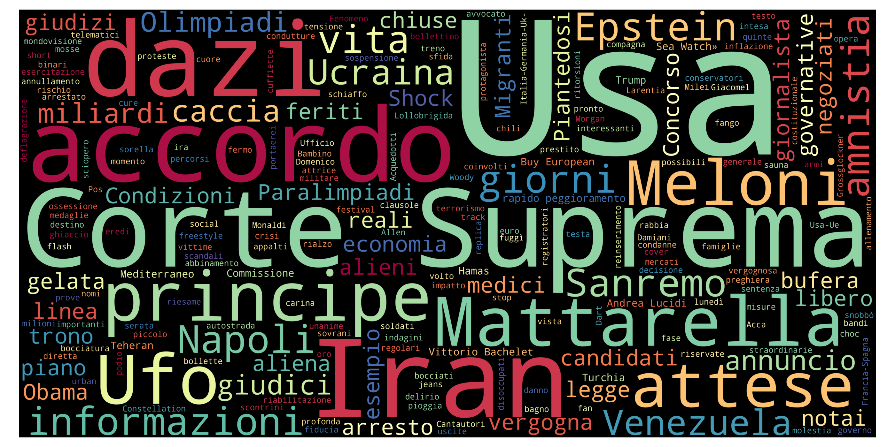
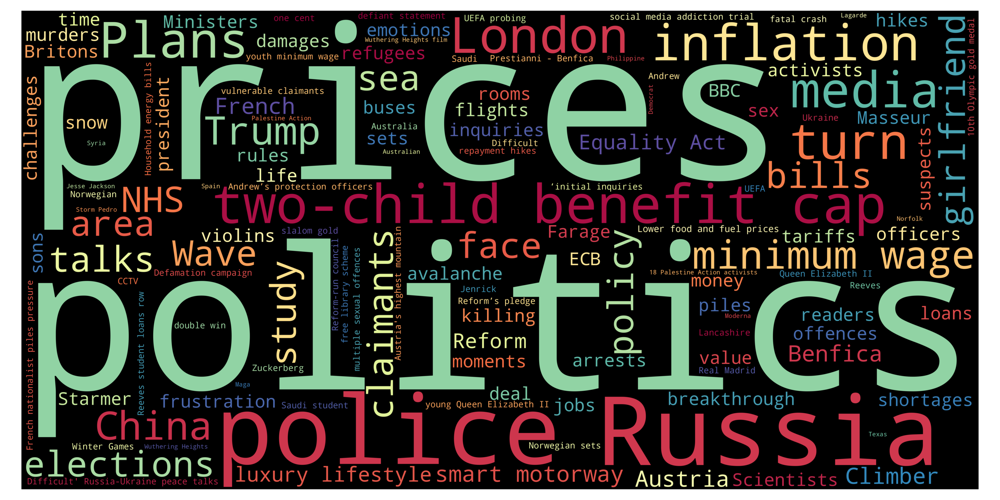
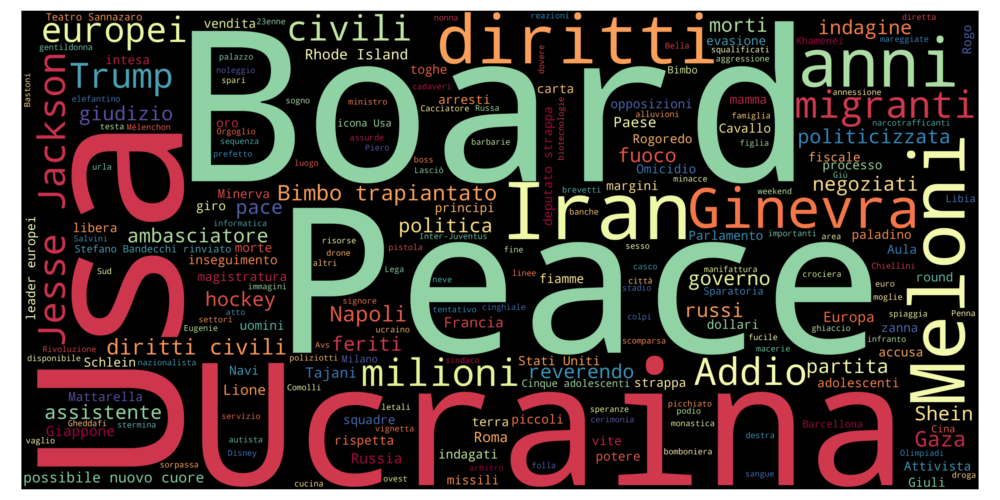
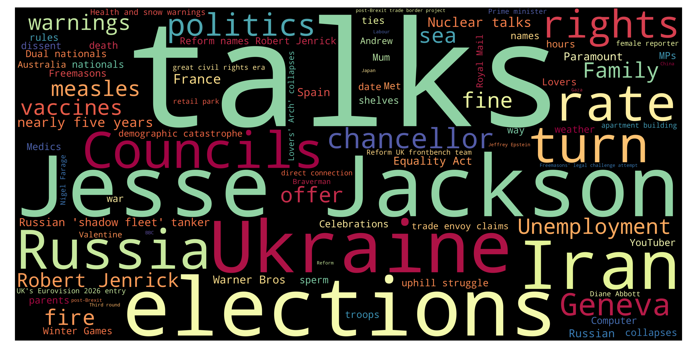
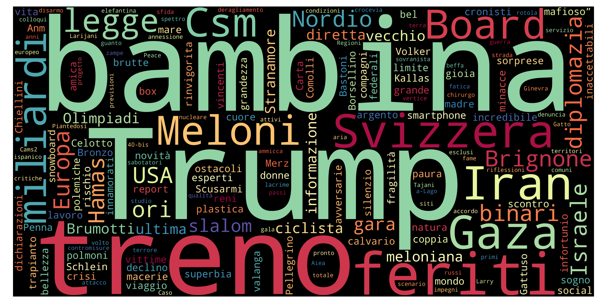
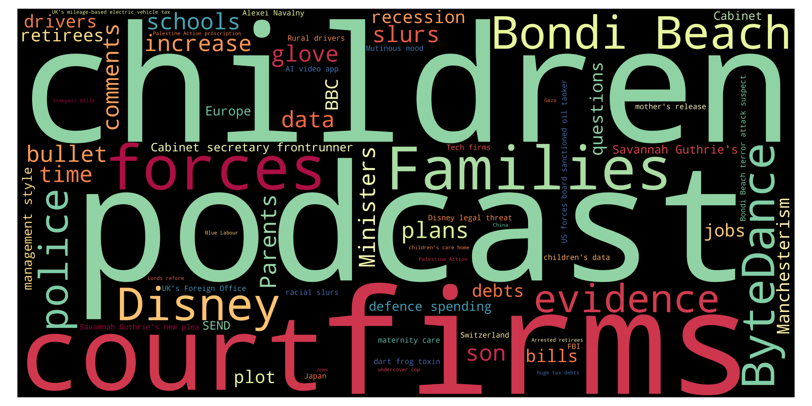
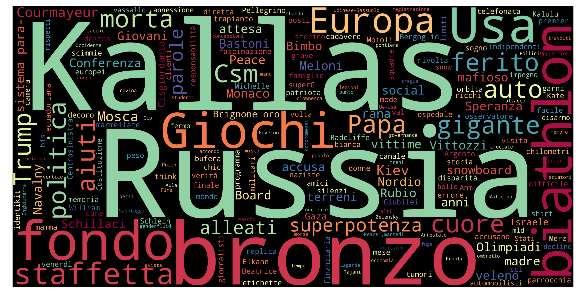

European News Dashboard
Daily view
Last update: 28 Feb 2026, 22:30 CET
🇮🇹 Italy — 28 Feb 2026
Updated: 28 Feb 2026, 22:30 CETWordcloud

Top 10 unigrams
| Term | Frequency |
|---|---|
| iran | 43 |
| israele | 15 |
| dubai | 12 |
| missile | 9 |
| teheran | 9 |
| khamenei | 8 |
| usa | 7 |
| guerra | 6 |
| anno | 6 |
| corpo | 5 |
Top 10 phrases
| Term | Frequency |
|---|---|
| medio oriente | 3 |
| ali khamenei | 3 |
| stretto di hormuz | 3 |
| serata finale | 2 |
| guida spirituale | 2 |
| feroce dittatore | 2 |
| stati uniti | 2 |
| bill clinton | 2 |
| serie a | 2 |
| missili iraniani | 2 |
Top 10 new terms (not present on previous day)
| Term | Current day frequency |
|---|---|
| dubai | 12 |
| missile | 9 |
| teheran | 9 |
| khamenei | 8 |
| guerra | 6 |
| corpo | 5 |
| crosetto | 4 |
| iraniano | 4 |
| ayatollah | 3 |
| pronto | 3 |
Top 10 increasing terms (vs previous day)
| Term | Difference | Current day frequency | Previous day frequency |
|---|---|---|---|
| iran | 34 | 43 | 9 |
| israele | 11 | 15 | 4 |
| attacco | 2 | 3 | 1 |
| meloni | 2 | 5 | 3 |
| volo | 2 | 4 | 2 |
| anno | 2 | 6 | 4 |
| operazione | 1 | 2 | 1 |
| drone | 1 | 2 | 1 |
| prova | 1 | 2 | 1 |
| diretta | 1 | 2 | 1 |
Top 10 decreasing terms (vs previous day)
| Term | Difference | Current day frequency | Previous day frequency |
|---|---|---|---|
| epstein | -7 | 2 | 9 |
| sanremo | -5 | 5 | 10 |
| cover | -4 | 1 | 5 |
| accordo | -4 | 2 | 6 |
| caso | -4 | 1 | 5 |
| elezione | -3 | 1 | 4 |
| negoziato | -2 | 2 | 4 |
| volta | -2 | 1 | 3 |
| ferito | -2 | 1 | 3 |
| morto | -1 | 3 | 4 |
🇬🇧 UK — 28 Feb 2026
Updated: 28 Feb 2026, 22:30 CETWordcloud

Top 10 unigrams
| Term | Frequency |
|---|---|
| iran | 36 |
| strike | 15 |
| trump | 10 |
| israel | 9 |
| war | 7 |
| flight | 6 |
| labour | 6 |
| dubai | 6 |
| churchill | 5 |
| graffiti | 4 |
Top 10 phrases
| Term | Frequency |
|---|---|
| middle east | 11 |
| josh simons | 4 |
| churchill statue | 4 |
| us israeli strikes | 3 |
| iran retaliation | 3 |
| labour deputy leader | 3 |
| hot tub photo | 3 |
| middle east flights | 3 |
| dubai doha airports | 3 |
| labour minister josh simons | 3 |
Top 10 new terms (not present on previous day)
| Term | Current day frequency |
|---|---|
| war | 7 |
| flight | 6 |
| dubai | 6 |
| josh simons | 4 |
| hot tub photo | 3 |
| iran retaliation | 3 |
| sky | 3 |
| risk | 3 |
| us israeli strikes | 3 |
| service | 3 |
Top 10 increasing terms (vs previous day)
| Term | Difference | Current day frequency | Previous day frequency |
|---|---|---|---|
| iran | 27 | 36 | 9 |
| strike | 13 | 15 | 2 |
| middle east | 7 | 11 | 4 |
| israel | 7 | 9 | 2 |
| trump | 3 | 10 | 7 |
| graffiti | 3 | 4 | 1 |
| child | 2 | 3 | 1 |
| israeli | 2 | 4 | 2 |
| defence | 1 | 2 | 1 |
Top 10 decreasing terms (vs previous day)
| Term | Difference | Current day frequency | Previous day frequency |
|---|---|---|---|
| election | -16 | 3 | 19 |
| labour | -10 | 6 | 16 |
| pakistan | -8 | 2 | 10 |
| reform | -7 | 1 | 8 |
| police | -3 | 2 | 5 |
| job | -3 | 1 | 4 |
| starmer | -3 | 3 | 6 |
| openai | -2 | 1 | 3 |
| bill clinton | -2 | 2 | 4 |
| sale | -2 | 1 | 3 |
🇮🇹 Italy — 27 Feb 2026
Updated: 28 Feb 2026, 22:30 CETWordcloud

Top 10 unigrams
| Term | Frequency |
|---|---|
| sanremo | 10 |
| epstein | 9 |
| iran | 9 |
| serata | 6 |
| accordo | 6 |
| usa | 6 |
| cover | 5 |
| caso | 5 |
| milano | 5 |
| duetto | 4 |
Top 10 phrases
| Term | Frequency |
|---|---|
| legge elettorale | 6 |
| bill clinton | 3 |
| iran usa | 2 |
| hillary clinton | 2 |
| via provvisoria | 2 |
| guerra aperta | 2 |
Top 10 new terms (not present on previous day)
| Term | Current day frequency |
|---|---|
| serata | 6 |
| cover | 5 |
| milano | 5 |
| elezione | 4 |
| tram | 4 |
| israele | 4 |
| duetto | 4 |
| medico | 4 |
| ferito | 3 |
| testimonianza | 3 |
Top 10 increasing terms (vs previous day)
| Term | Difference | Current day frequency | Previous day frequency |
|---|---|---|---|
| iran | 6 | 9 | 3 |
| fuoco | 3 | 4 | 1 |
| negoziato | 3 | 4 | 1 |
| congresso | 3 | 4 | 1 |
| accordo | 3 | 6 | 3 |
| volta | 2 | 3 | 1 |
| mogol | 2 | 3 | 1 |
| cuore | 1 | 2 | 1 |
| intesa | 1 | 2 | 1 |
| febbraio | 1 | 3 | 2 |
Top 10 decreasing terms (vs previous day)
| Term | Difference | Current day frequency | Previous day frequency |
|---|---|---|---|
| trump | -6 | 3 | 9 |
| legge elettorale | -5 | 6 | 11 |
| colloquio | -4 | 1 | 5 |
| domenico | -4 | 2 | 6 |
| caso | -4 | 5 | 9 |
| cuba | -3 | 1 | 4 |
| premio | -2 | 2 | 4 |
| referendum | -2 | 1 | 3 |
| hillary clinton | -2 | 2 | 4 |
| centrodestra | -2 | 1 | 3 |
🇬🇧 UK — 27 Feb 2026
Updated: 28 Feb 2026, 22:30 CETWordcloud

Top 10 unigrams
| Term | Frequency |
|---|---|
| election | 19 |
| denton | 18 |
| gorton | 17 |
| labour | 16 |
| pakistan | 10 |
| iran | 9 |
| reform | 8 |
| afghanistan | 8 |
| greens | 8 |
| trump | 7 |
Top 10 phrases
| Term | Frequency |
|---|---|
| green party | 7 |
| churchill statue | 5 |
| open war | 5 |
| middle east | 4 |
| gorton denton byelection | 4 |
| bill clinton | 4 |
| green victory | 3 |
| legal challenge | 3 |
| six planets | 3 |
| tram derails | 3 |
Top 10 new terms (not present on previous day)
| Term | Current day frequency |
|---|---|
| election | 19 |
| green party | 7 |
| churchill statue | 5 |
| open war | 5 |
| churchill | 5 |
| gorton denton byelection | 4 |
| bill clinton | 4 |
| tie | 4 |
| derail | 3 |
| life | 3 |
Top 10 increasing terms (vs previous day)
| Term | Difference | Current day frequency | Previous day frequency |
|---|---|---|---|
| denton | 15 | 18 | 3 |
| gorton | 13 | 17 | 4 |
| labour | 10 | 16 | 6 |
| pakistan | 8 | 10 | 2 |
| afghanistan | 6 | 8 | 2 |
| greens | 6 | 8 | 2 |
| reform | 5 | 8 | 3 |
| dozen | 3 | 4 | 1 |
| crime | 2 | 3 | 1 |
| injury | 2 | 3 | 1 |
Top 10 decreasing terms (vs previous day)
| Term | Difference | Current day frequency | Previous day frequency |
|---|---|---|---|
| ian huntley | -4 | 2 | 6 |
| ukraine | -4 | 2 | 6 |
| medium | -4 | 1 | 5 |
| time | -3 | 2 | 5 |
| talk | -3 | 4 | 7 |
| trump | -3 | 7 | 10 |
| file | -2 | 1 | 3 |
| proposal | -1 | 1 | 2 |
| fear | -1 | 2 | 3 |
| podcast | -1 | 1 | 2 |
🇮🇹 Italy — 26 Feb 2026
Updated: 28 Feb 2026, 22:30 CETWordcloud

Top 10 unigrams
| Term | Frequency |
|---|---|
| epstein | 10 |
| trump | 9 |
| caso | 9 |
| sanremo | 9 |
| usa | 7 |
| domenico | 6 |
| terzo | 5 |
| colloquio | 5 |
| premio | 4 |
| morto | 4 |
Top 10 phrases
| Term | Frequency |
|---|---|
| legge elettorale | 11 |
| terza serata | 4 |
| hillary clinton | 4 |
| quei file | 2 |
| guardia costiera | 2 |
| seconda serata | 2 |
| unione europea | 2 |
| iran usa | 2 |
| a il | 1 |
Top 10 new terms (not present on previous day)
| Term | Current day frequency |
|---|---|
| legge elettorale | 11 |
| terzo | 5 |
| terza serata | 4 |
| kiev | 4 |
| cuba | 4 |
| hillary clinton | 4 |
| morto | 4 |
| centrodestra | 3 |
| anno | 3 |
| meloni | 3 |
Top 10 increasing terms (vs previous day)
| Term | Difference | Current day frequency | Previous day frequency |
|---|---|---|---|
| epstein | 6 | 10 | 4 |
| caso | 5 | 9 | 4 |
| premio | 3 | 4 | 1 |
| maggioranza | 3 | 4 | 1 |
| sanremo | 2 | 9 | 7 |
| domenico | 2 | 6 | 4 |
| colloquio | 2 | 5 | 3 |
| motoscafo | 2 | 3 | 1 |
| omicidio | 2 | 3 | 1 |
| accordo | 1 | 3 | 2 |
Top 10 decreasing terms (vs previous day)
| Term | Difference | Current day frequency | Previous day frequency |
|---|---|---|---|
| trump | -13 | 9 | 22 |
| iran | -4 | 3 | 7 |
| seconda serata | -3 | 2 | 5 |
| donna | -2 | 1 | 3 |
| accusa | -2 | 1 | 3 |
| persona | -2 | 1 | 3 |
| zelensky | -2 | 1 | 3 |
| ucraina | -1 | 3 | 4 |
| incontro | -1 | 1 | 2 |
| congresso | -1 | 1 | 2 |
🇬🇧 UK — 26 Feb 2026
Updated: 28 Feb 2026, 22:30 CETWordcloud

Top 10 unigrams
| Term | Frequency |
|---|---|
| iran | 10 |
| trump | 10 |
| talk | 7 |
| mandelson | 7 |
| soldier | 6 |
| death | 6 |
| war | 6 |
| ukraine | 6 |
| labour | 6 |
| police | 5 |
Top 10 phrases
| Term | Frequency |
|---|---|
| ian huntley | 6 |
| post brexit | 4 |
| post brexit deal | 4 |
| danish pm | 4 |
| assisted dying bill | 4 |
| andrew mountbatten windsor | 4 |
| soham murderer ian huntley | 3 |
| us iran talks | 3 |
| mandelson papers | 3 |
| party parliamentary leader | 3 |
Top 10 new terms (not present on previous day)
| Term | Current day frequency |
|---|---|
| soldier | 6 |
| ukraine | 6 |
| war | 6 |
| ian huntley | 6 |
| medium | 5 |
| time | 5 |
| russia | 4 |
| parent | 4 |
| post brexit deal | 4 |
| assisted dying bill | 4 |
Top 10 increasing terms (vs previous day)
| Term | Difference | Current day frequency | Previous day frequency |
|---|---|---|---|
| iran | 4 | 10 | 6 |
| death | 3 | 6 | 3 |
| party | 3 | 4 | 1 |
| trump | 3 | 10 | 7 |
| talk | 3 | 7 | 4 |
| family | 3 | 4 | 1 |
| right | 2 | 3 | 1 |
| progress | 2 | 3 | 1 |
| labour | 2 | 6 | 4 |
| andrew mountbatten windsor | 2 | 4 | 2 |
Top 10 decreasing terms (vs previous day)
| Term | Difference | Current day frequency | Previous day frequency |
|---|---|---|---|
| murder | -6 | 3 | 9 |
| minister | -4 | 1 | 5 |
| loan | -4 | 3 | 7 |
| apologise | -4 | 1 | 5 |
| us registered speedboat | -3 | 2 | 5 |
| government | -2 | 1 | 3 |
| axe | -2 | 1 | 3 |
| battle | -2 | 1 | 3 |
| cuba | -1 | 3 | 4 |
| moment | -1 | 1 | 2 |
🇮🇹 Italy — 25 Feb 2026
Updated: 28 Feb 2026, 22:30 CETWordcloud

Top 10 unigrams
| Term | Frequency |
|---|---|
| trump | 22 |
| sanremo | 7 |
| iran | 7 |
| usa | 6 |
| domenico | 4 |
| unione | 4 |
| caso | 4 |
| epstein | 4 |
| spagna | 4 |
| senato | 4 |
Top 10 phrases
| Term | Frequency |
|---|---|
| seconda serata | 5 |
| stato dellunione | 3 |
| antonio tejero | 2 |
| controllo giudiziario | 2 |
| el mencho | 2 |
| christophe leribault | 2 |
| discorso record | 2 |
Top 10 new terms (not present on previous day)
| Term | Current day frequency |
|---|---|
| seconda serata | 5 |
| caso | 4 |
| epstein | 4 |
| senato | 4 |
| spagna | 4 |
| direttore | 3 |
| età | 3 |
| stato dellunione | 3 |
| green | 3 |
| bolzano | 3 |
Top 10 increasing terms (vs previous day)
| Term | Difference | Current day frequency | Previous day frequency |
|---|---|---|---|
| trump | 11 | 22 | 11 |
| domenico | 3 | 4 | 1 |
| colloquio | 2 | 3 | 1 |
| unione | 2 | 4 | 2 |
| accusa | 2 | 3 | 1 |
| iran | 2 | 7 | 5 |
| scontro | 2 | 3 | 1 |
| referendum | 2 | 3 | 1 |
| dazio | 1 | 2 | 1 |
| diretta | 1 | 2 | 1 |
Top 10 decreasing terms (vs previous day)
| Term | Difference | Current day frequency | Previous day frequency |
|---|---|---|---|
| ucraina | -11 | 4 | 15 |
| guerra | -4 | 2 | 6 |
| zelensky | -3 | 3 | 6 |
| forte | -2 | 1 | 3 |
| agente | -2 | 1 | 3 |
| stop | -1 | 2 | 3 |
| omicidio | -1 | 1 | 2 |
| messico | -1 | 3 | 4 |
| milione | -1 | 1 | 2 |
| indagato | -1 | 1 | 2 |
🇬🇧 UK — 25 Feb 2026
Updated: 28 Feb 2026, 22:30 CETWordcloud

Top 10 unigrams
| Term | Frequency |
|---|---|
| murder | 9 |
| loan | 7 |
| bbc | 7 |
| trump | 7 |
| election | 6 |
| mandelson | 6 |
| iran | 6 |
| starmer | 6 |
| andrew | 6 |
| apologise | 5 |
Top 10 phrases
| Term | Frequency |
|---|---|
| us registered speedboat | 5 |
| state of the union | 5 |
| commons speaker | 4 |
| met apologises | 4 |
| mandelson lawyers | 4 |
| chagos islands | 3 |
| chagos islands deal | 3 |
| border guards | 3 |
| student loans fairer | 3 |
| rachel reeves | 3 |
Top 10 new terms (not present on previous day)
| Term | Current day frequency |
|---|---|
| murder | 9 |
| loan | 7 |
| state of the union | 5 |
| us registered speedboat | 5 |
| cuba | 4 |
| commons speaker | 4 |
| met apologises | 4 |
| tie | 4 |
| secretary | 4 |
| service | 3 |
Top 10 increasing terms (vs previous day)
| Term | Difference | Current day frequency | Previous day frequency |
|---|---|---|---|
| apologise | 4 | 5 | 1 |
| starmer | 4 | 6 | 2 |
| iran | 3 | 6 | 3 |
| talk | 3 | 4 | 1 |
| election | 3 | 6 | 3 |
| trump | 3 | 7 | 4 |
| gorton | 2 | 4 | 2 |
| victim | 2 | 3 | 1 |
| denton | 2 | 4 | 2 |
| epstein | 2 | 5 | 3 |
Top 10 decreasing terms (vs previous day)
| Term | Difference | Current day frequency | Previous day frequency |
|---|---|---|---|
| arrest | -4 | 2 | 6 |
| order | -4 | 1 | 5 |
| investigation | -3 | 1 | 4 |
| life | -3 | 2 | 5 |
| mps | -3 | 1 | 4 |
| minister | -2 | 5 | 7 |
| child | -2 | 1 | 3 |
| killing | -2 | 1 | 3 |
| mandelson | -2 | 6 | 8 |
| sanction | -2 | 1 | 3 |
🇮🇹 Italy — 24 Feb 2026
Updated: 28 Feb 2026, 22:30 CETWordcloud

Top 10 unigrams
| Term | Frequency |
|---|---|
| ucraina | 15 |
| anno | 11 |
| trump | 11 |
| primo | 8 |
| usa | 7 |
| sanremo | 7 |
| vannacci | 7 |
| kiev | 7 |
| pace | 6 |
| zelensky | 6 |
Top 10 phrases
| Term | Frequency |
|---|---|
| corte dei conti | 3 |
| futuro nazionale | 3 |
| decreto sicurezza | 2 |
| mila euro | 2 |
| el mencho | 2 |
| new york | 2 |
| dazi usa | 2 |
| congedo paritario | 2 |
| ruolo fondamentale | 2 |
| palazzo chigi | 2 |
Top 10 new terms (not present on previous day)
| Term | Current day frequency |
|---|---|
| vannacci | 7 |
| pace | 6 |
| altro | 4 |
| corte dei conti | 3 |
| serata | 3 |
| futuro nazionale | 3 |
| forte | 3 |
| vigore | 3 |
| alcolock | 3 |
| louvre | 3 |
Top 10 increasing terms (vs previous day)
| Term | Difference | Current day frequency | Previous day frequency |
|---|---|---|---|
| ucraina | 7 | 15 | 8 |
| kiev | 6 | 7 | 1 |
| primo | 6 | 8 | 2 |
| zelensky | 5 | 6 | 1 |
| sanremo | 4 | 7 | 3 |
| iran | 2 | 5 | 3 |
| mosca | 2 | 4 | 2 |
| trump | 2 | 11 | 9 |
| stop | 2 | 3 | 1 |
| realtà | 2 | 3 | 1 |
Top 10 decreasing terms (vs previous day)
| Term | Difference | Current day frequency | Previous day frequency |
|---|---|---|---|
| el mencho | -6 | 2 | 8 |
| usa | -4 | 7 | 11 |
| guerra | -3 | 6 | 9 |
| new york | -3 | 2 | 5 |
| poliziotto | -3 | 2 | 5 |
| rogoredo | -3 | 2 | 5 |
| omicidio | -3 | 2 | 5 |
| meloni | -3 | 1 | 4 |
| dazio | -2 | 1 | 3 |
| caos | -2 | 1 | 3 |
🇬🇧 UK — 24 Feb 2026
Updated: 28 Feb 2026, 22:30 CETWordcloud

Top 10 unigrams
| Term | Frequency |
|---|---|
| mandelson | 8 |
| russian | 8 |
| minister | 7 |
| bbc | 7 |
| ukraine | 7 |
| arrest | 6 |
| andrew | 6 |
| order | 5 |
| life | 5 |
| government | 5 |
Top 10 phrases
| Term | Frequency |
|---|---|
| russian soldiers | 4 |
| mandelson lawyers | 3 |
| court backlog | 3 |
| temporary ban | 3 |
| peter mandelson | 3 |
| venice valentine stabbing | 3 |
| attempted murder | 3 |
| andrew mountbatten windsor | 3 |
| flight risk | 2 |
| trade role files | 2 |
Top 10 new terms (not present on previous day)
| Term | Current day frequency |
|---|---|
| russian | 8 |
| investigation | 4 |
| troop | 4 |
| lammy | 4 |
| russian soldiers | 4 |
| reward | 4 |
| tiger | 3 |
| court backlog | 3 |
| wife | 3 |
| file | 3 |
Top 10 increasing terms (vs previous day)
| Term | Difference | Current day frequency | Previous day frequency |
|---|---|---|---|
| minister | 5 | 7 | 2 |
| arrest | 4 | 6 | 2 |
| order | 4 | 5 | 1 |
| labour | 3 | 5 | 2 |
| bbc | 3 | 7 | 4 |
| life | 3 | 5 | 2 |
| government | 3 | 5 | 2 |
| soldier | 2 | 4 | 2 |
| release | 2 | 3 | 1 |
| mandelson | 2 | 8 | 6 |
Top 10 decreasing terms (vs previous day)
| Term | Difference | Current day frequency | Previous day frequency |
|---|---|---|---|
| child | -7 | 3 | 10 |
| succession | -5 | 2 | 7 |
| tariff | -5 | 3 | 8 |
| peter mandelson | -5 | 3 | 8 |
| mexico | -5 | 5 | 10 |
| fear | -3 | 1 | 4 |
| trump | -3 | 4 | 7 |
| russia | -2 | 3 | 5 |
| ethic | -2 | 1 | 3 |
| australia | -2 | 2 | 4 |
🇮🇹 Italy — 23 Feb 2026
Updated: 28 Feb 2026, 22:30 CETWordcloud

Top 10 unigrams
| Term | Frequency |
|---|---|
| anno | 11 |
| usa | 11 |
| trump | 9 |
| guerra | 9 |
| ucraina | 8 |
| niscemi | 6 |
| conti | 5 |
| poliziotto | 5 |
| omicidio | 5 |
| rogoredo | 5 |
Top 10 phrases
| Term | Frequency |
|---|---|
| el mencho | 8 |
| new york | 5 |
| peter mandelson | 2 |
| mattarella a | 2 |
| almeno morti | 2 |
| sondaggio politico | 2 |
| iran usa | 2 |
Top 10 new terms (not present on previous day)
| Term | Current day frequency |
|---|---|
| niscemi | 6 |
| rogoredo | 5 |
| new york | 5 |
| conti | 5 |
| poliziotto | 5 |
| europa | 4 |
| neve | 4 |
| sanremo | 3 |
| jalisco | 3 |
| sorpresa | 3 |
Top 10 increasing terms (vs previous day)
| Term | Difference | Current day frequency | Previous day frequency |
|---|---|---|---|
| anno | 8 | 11 | 3 |
| guerra | 8 | 9 | 1 |
| el mencho | 6 | 8 | 2 |
| ucraina | 4 | 8 | 4 |
| epstein | 3 | 4 | 1 |
| usa | 3 | 11 | 8 |
| omicidio | 3 | 5 | 2 |
| caos | 2 | 3 | 1 |
| andrea | 2 | 3 | 1 |
| uccisione | 2 | 3 | 1 |
Top 10 decreasing terms (vs previous day)
| Term | Difference | Current day frequency | Previous day frequency |
|---|---|---|---|
| trump | -7 | 9 | 16 |
| iran | -5 | 3 | 8 |
| uomo | -4 | 1 | 5 |
| morto | -3 | 3 | 6 |
| olimpiadi | -3 | 1 | 4 |
| drone | -2 | 2 | 4 |
| sanzione | -2 | 1 | 3 |
| mattarella | -2 | 2 | 4 |
| morte | -1 | 1 | 2 |
| ambasciatore | -1 | 2 | 3 |
🇬🇧 UK — 23 Feb 2026
Updated: 28 Feb 2026, 22:30 CETWordcloud

Top 10 unigrams
| Term | Frequency |
|---|---|
| child | 10 |
| mexico | 10 |
| tariff | 8 |
| parent | 7 |
| succession | 7 |
| andrew | 7 |
| trump | 7 |
| inquiry | 6 |
| change | 6 |
| mandelson | 6 |
Top 10 phrases
| Term | Frequency |
|---|---|
| peter mandelson | 8 |
| el mencho | 7 |
| racial slur | 4 |
| us tariffs | 4 |
| royal line | 4 |
| jeffrey epstein | 4 |
| lord mandelson | 3 |
| drug lord | 3 |
| romantic partner | 3 |
| old son | 3 |
Top 10 new terms (not present on previous day)
| Term | Current day frequency |
|---|---|
| tariff | 8 |
| peter mandelson | 8 |
| succession | 7 |
| parent | 7 |
| mandelson | 6 |
| table | 5 |
| us tariffs | 4 |
| plan | 4 |
| racial slur | 4 |
| thousand | 4 |
Top 10 increasing terms (vs previous day)
| Term | Difference | Current day frequency | Previous day frequency |
|---|---|---|---|
| mexico | 7 | 10 | 3 |
| child | 7 | 10 | 3 |
| change | 5 | 6 | 1 |
| inquiry | 4 | 6 | 2 |
| reform | 3 | 4 | 1 |
| el mencho | 3 | 7 | 4 |
| russia | 3 | 5 | 2 |
| mps | 2 | 3 | 1 |
| death | 2 | 5 | 3 |
| war | 2 | 3 | 1 |
Top 10 decreasing terms (vs previous day)
| Term | Difference | Current day frequency | Previous day frequency |
|---|---|---|---|
| trump | -6 | 7 | 13 |
| iran | -6 | 2 | 8 |
| protest | -3 | 1 | 4 |
| minister | -2 | 2 | 4 |
| comment | -2 | 1 | 3 |
| search | -2 | 1 | 3 |
| andrew | -2 | 7 | 9 |
| crash | -2 | 1 | 3 |
| rule | -1 | 1 | 2 |
| link | -1 | 2 | 3 |
🇮🇹 Italy — 22 Feb 2026
Updated: 28 Feb 2026, 22:30 CETWordcloud

Top 10 unigrams
| Term | Frequency |
|---|---|
| trump | 16 |
| usa | 8 |
| iran | 8 |
| a-lago | 6 |
| morto | 6 |
| uomo | 5 |
| olimpiadi | 4 |
| diretta | 4 |
| dazio | 4 |
| arma | 4 |
Top 10 phrases
| Term | Frequency |
|---|---|
| mar a lago | 6 |
| serie a | 3 |
| el mencho | 2 |
| saint moritz | 2 |
| accordo segreto | 2 |
| dazi globali | 2 |
| corte suprema | 2 |
| casa bianca | 2 |
| raid pakistani | 2 |
Top 10 new terms (not present on previous day)
| Term | Current day frequency |
|---|---|
| mar a lago | 6 |
| morto | 6 |
| a-lago | 6 |
| arma | 4 |
| mattarella | 4 |
| sanzione | 3 |
| telefonata | 3 |
| missile | 3 |
| afghanistan | 3 |
| residenza | 3 |
Top 10 increasing terms (vs previous day)
| Term | Difference | Current day frequency | Previous day frequency |
|---|---|---|---|
| trump | 5 | 16 | 11 |
| uomo | 4 | 5 | 1 |
| iran | 3 | 8 | 5 |
| drone | 3 | 4 | 1 |
| ucraina | 3 | 4 | 1 |
| diretta | 3 | 4 | 1 |
| olimpiadi | 3 | 4 | 1 |
| globale | 2 | 3 | 1 |
| usa | 2 | 8 | 6 |
| roma | 1 | 3 | 2 |
Top 10 decreasing terms (vs previous day)
| Term | Difference | Current day frequency | Previous day frequency |
|---|---|---|---|
| domenico | -5 | 1 | 6 |
| andrea | -4 | 1 | 5 |
| dazio | -4 | 4 | 8 |
| mamma | -2 | 1 | 3 |
| guerra | -2 | 1 | 3 |
| dazi | -2 | 2 | 4 |
| tariffa | -1 | 1 | 2 |
| indagato | -1 | 1 | 2 |
| presidente | -1 | 1 | 2 |
| saluto | -1 | 1 | 2 |
🇬🇧 UK — 22 Feb 2026
Updated: 28 Feb 2026, 22:30 CETWordcloud

Top 10 unigrams
| Term | Frequency |
|---|---|
| trump | 13 |
| andrew | 9 |
| iran | 8 |
| tribute | 6 |
| ukraine | 5 |
| minister | 4 |
| barrack | 4 |
| protest | 4 |
| deal | 4 |
| greenland | 4 |
Top 10 phrases
| Term | Frequency |
|---|---|
| prince william | 6 |
| secret service | 4 |
| military operation | 4 |
| el mencho | 4 |
| treason probe | 3 |
| andrew epstein links | 3 |
| army medic | 3 |
| nigel farage | 3 |
| secure perimeter | 2 |
| trump residence | 2 |
Top 10 new terms (not present on previous day)
| Term | Current day frequency |
|---|---|
| tribute | 6 |
| prince william | 6 |
| secret service | 4 |
| deal | 4 |
| el mencho | 4 |
| military operation | 4 |
| greenland | 4 |
| minister | 4 |
| nigel farage | 3 |
| treason probe | 3 |
Top 10 increasing terms (vs previous day)
| Term | Difference | Current day frequency | Previous day frequency |
|---|---|---|---|
| andrew | 4 | 9 | 5 |
| ukraine | 3 | 5 | 2 |
| trump | 3 | 13 | 10 |
| barrack | 3 | 4 | 1 |
| iran | 3 | 8 | 5 |
| picture | 2 | 3 | 1 |
| death | 2 | 3 | 1 |
| comment | 2 | 3 | 1 |
| nation | 2 | 3 | 1 |
| warning | 1 | 2 | 1 |
Top 10 decreasing terms (vs previous day)
| Term | Difference | Current day frequency | Previous day frequency |
|---|---|---|---|
| strike | -3 | 1 | 4 |
| war | -2 | 1 | 3 |
| andrew arrest | -2 | 2 | 4 |
| troop | -1 | 1 | 2 |
| inquiry | -1 | 2 | 3 |
| call | -1 | 1 | 2 |
🇮🇹 Italy — 21 Feb 2026
Updated: 28 Feb 2026, 22:30 CETWordcloud

Top 10 unigrams
| Term | Frequency |
|---|---|
| trump | 11 |
| dazio | 8 |
| domenico | 6 |
| usa | 6 |
| andrea | 5 |
| iran | 5 |
| dazi | 4 |
| scontro | 3 |
| grave | 3 |
| mamma | 3 |
Top 10 phrases
| Term | Frequency |
|---|---|
| milano cortina | 3 |
| quentin deranque | 2 |
| effetto immediato | 2 |
| medio oriente | 2 |
Top 10 new terms (not present on previous day)
| Term | Current day frequency |
|---|---|
| andrea | 5 |
| milano cortina | 3 |
| lione | 3 |
| grave | 3 |
| mamma | 3 |
| cellulare | 2 |
| quentin deranque | 2 |
| neonato | 2 |
| como | 2 |
| sequestro | 2 |
Top 10 increasing terms (vs previous day)
| Term | Difference | Current day frequency | Previous day frequency |
|---|---|---|---|
| trump | 8 | 11 | 3 |
| domenico | 5 | 6 | 1 |
| scontro | 2 | 3 | 1 |
| corteo | 1 | 2 | 1 |
| monaldi | 1 | 2 | 1 |
| carlo | 1 | 2 | 1 |
| presidente | 1 | 2 | 1 |
| dazi | 1 | 4 | 3 |
| giochi | 1 | 2 | 1 |
| guerra | 1 | 3 | 2 |
Top 10 decreasing terms (vs previous day)
| Term | Difference | Current day frequency | Previous day frequency |
|---|---|---|---|
| usa | -7 | 6 | 13 |
| principe | -4 | 1 | 5 |
| giudice | -4 | 2 | 6 |
| ucraina | -3 | 1 | 4 |
| zelensky | -3 | 1 | 4 |
| giorno | -3 | 1 | 4 |
| dazio | -3 | 8 | 11 |
| epstein | -2 | 1 | 3 |
| russia | -2 | 1 | 3 |
| meloni | -2 | 2 | 4 |
🇬🇧 UK — 21 Feb 2026
Updated: 28 Feb 2026, 22:30 CETWordcloud

Top 10 unigrams
| Term | Frequency |
|---|---|
| trump | 10 |
| tariff | 7 |
| iran | 5 |
| andrew | 5 |
| strike | 4 |
| body | 4 |
| nasa | 4 |
| israel | 4 |
| bishop | 4 |
| lincoln | 4 |
Top 10 phrases
| Term | Frequency |
|---|---|
| london bridge | 5 |
| andrew arrest | 4 |
| sexual assault | 4 |
| global tariffs | 3 |
| trade envoy role | 3 |
| west bank | 3 |
| israeli strikes | 3 |
| deadly crackdown | 2 |
| iran students | 2 |
| anti government protests | 2 |
Top 10 new terms (not present on previous day)
| Term | Current day frequency |
|---|---|
| tariff | 7 |
| london bridge | 5 |
| body | 4 |
| andrew arrest | 4 |
| lincoln | 4 |
| strike | 4 |
| bishop | 4 |
| israel | 4 |
| sexual assault | 4 |
| west bank | 3 |
Top 10 increasing terms (vs previous day)
| Term | Difference | Current day frequency | Previous day frequency |
|---|---|---|---|
| nasa | 2 | 4 | 2 |
| inquiry | 2 | 3 | 1 |
| civilian | 1 | 2 | 1 |
| war | 1 | 3 | 2 |
| soldier | 1 | 2 | 1 |
| place | 1 | 2 | 1 |
| heart | 1 | 2 | 1 |
| global tariffs | 1 | 3 | 2 |
| bbc | 1 | 3 | 2 |
Top 10 decreasing terms (vs previous day)
| Term | Difference | Current day frequency | Previous day frequency |
|---|---|---|---|
| death | -10 | 1 | 11 |
| andrew | -9 | 5 | 14 |
| succession | -4 | 3 | 7 |
| officer | -4 | 1 | 5 |
| comment | -4 | 1 | 5 |
| supreme court | -4 | 2 | 6 |
| iran | -3 | 5 | 8 |
| file | -2 | 1 | 3 |
| blow | -1 | 1 | 2 |
| justice | -1 | 1 | 2 |
🇮🇹 Italy — 20 Feb 2026
Updated: 28 Feb 2026, 22:30 CETWordcloud

Top 10 unigrams
| Term | Frequency |
|---|---|
| usa | 13 |
| dazio | 11 |
| giudice | 6 |
| principe | 5 |
| accordo | 5 |
| iran | 5 |
| meloni | 4 |
| zelensky | 4 |
| ufo | 4 |
| mattarella | 4 |
Top 10 phrases
| Term | Frequency |
|---|---|
| corte suprema | 7 |
| dazi bocciati | 2 |
| interessi stranieri | 2 |
| andrea lucidi | 2 |
| sea watch | 2 |
| corte suprema usa | 2 |
| vittorio bachelet | 2 |
Top 10 new terms (not present on previous day)
| Term | Current day frequency |
|---|---|
| dazio | 11 |
| corte suprema | 7 |
| giudice | 6 |
| principe | 5 |
| ufo | 4 |
| hamas | 3 |
| teheran | 3 |
| tariffa | 3 |
| linea | 3 |
| napoli | 3 |
Top 10 increasing terms (vs previous day)
| Term | Difference | Current day frequency | Previous day frequency |
|---|---|---|---|
| usa | 3 | 13 | 10 |
| accordo | 2 | 5 | 3 |
| sanremo | 2 | 4 | 2 |
| miliardo | 2 | 3 | 1 |
| legge | 2 | 3 | 1 |
| zelensky | 2 | 4 | 2 |
| ucraina | 2 | 4 | 2 |
| giorno | 2 | 4 | 2 |
| annuncio | 1 | 2 | 1 |
| obama | 1 | 2 | 1 |
Top 10 decreasing terms (vs previous day)
| Term | Difference | Current day frequency | Previous day frequency |
|---|---|---|---|
| trump | -13 | 3 | 16 |
| board | -10 | 1 | 11 |
| meloni | -10 | 4 | 14 |
| peace | -9 | 1 | 10 |
| iran | -5 | 5 | 10 |
| presidente | -4 | 1 | 5 |
| referendum | -4 | 1 | 5 |
| oro | -3 | 1 | 4 |
| commento | -3 | 1 | 4 |
| governo | -2 | 1 | 3 |
🇬🇧 UK — 20 Feb 2026
Updated: 28 Feb 2026, 22:30 CETWordcloud
Top 10 unigrams
| Term | Frequency |
|---|---|
| andrew | 14 |
| death | 11 |
| trump | 10 |
| iran | 8 |
| succession | 7 |
| thailand | 6 |
| government | 5 |
| officer | 5 |
| dog | 5 |
| comment | 5 |
Top 10 phrases
| Term | Frequency |
|---|---|
| andrew mountbatten windsor | 9 |
| supreme court | 6 |
| teen couple | 4 |
| royal line | 3 |
| holiday park | 3 |
| andrew protection officers | 3 |
| eric dane | 3 |
| wintry weather | 3 |
| lib dems | 3 |
| old boy | 3 |
Top 10 new terms (not present on previous day)
| Term | Current day frequency |
|---|---|
| supreme court | 6 |
| thailand | 6 |
| government | 5 |
| dog | 5 |
| asos | 5 |
| officer | 5 |
| tribute | 4 |
| labour | 4 |
| teen couple | 4 |
| founder | 4 |
Top 10 increasing terms (vs previous day)
| Term | Difference | Current day frequency | Previous day frequency |
|---|---|---|---|
| death | 9 | 11 | 2 |
| succession | 6 | 7 | 1 |
| andrew | 4 | 14 | 10 |
| comment | 4 | 5 | 1 |
| police | 2 | 5 | 3 |
| trump | 2 | 10 | 8 |
| war | 1 | 2 | 1 |
| reeves | 1 | 2 | 1 |
| murder | 1 | 3 | 2 |
| blow | 1 | 2 | 1 |
Top 10 decreasing terms (vs previous day)
| Term | Difference | Current day frequency | Previous day frequency |
|---|---|---|---|
| iran | -13 | 8 | 21 |
| andrew mountbatten windsor | -10 | 9 | 19 |
| teenager | -4 | 1 | 5 |
| starmer | -3 | 2 | 5 |
| life | -3 | 1 | 4 |
| rule | -2 | 1 | 3 |
| child | -2 | 1 | 3 |
| collapse | -2 | 1 | 3 |
| jet | -2 | 1 | 3 |
| head | -2 | 2 | 4 |
🇮🇹 Italy — 19 Feb 2026
Updated: 28 Feb 2026, 22:30 CETWordcloud
Top 10 unigrams
| Term | Frequency |
|---|---|
| trump | 16 |
| meloni | 14 |
| board | 11 |
| peace | 10 |
| usa | 10 |
| iran | 10 |
| macron | 7 |
| parola | 6 |
| mattarella | 5 |
| referendum | 5 |
Top 10 phrases
| Term | Frequency |
|---|---|
| re carlo | 4 |
| corea del sud | 4 |
| giuste parole | 3 |
| rai sport | 3 |
| palazzo chigi | 3 |
| giusto richiamo | 2 |
| toni apocalittici | 2 |
| crans montana | 2 |
| caso epstein arrestato ex principe andrea | 2 |
| pre on te | 1 |
Top 10 new terms (not present on previous day)
| Term | Current day frequency |
|---|---|
| macron | 7 |
| presidente | 5 |
| canada | 5 |
| commento | 4 |
| corea del sud | 4 |
| inchiesta | 4 |
| roma | 4 |
| yoon | 4 |
| re carlo | 4 |
| oro | 4 |
Top 10 increasing terms (vs previous day)
| Term | Difference | Current day frequency | Previous day frequency |
|---|---|---|---|
| trump | 10 | 16 | 6 |
| board | 7 | 11 | 4 |
| peace | 7 | 10 | 3 |
| meloni | 7 | 14 | 7 |
| iran | 7 | 10 | 3 |
| usa | 6 | 10 | 4 |
| parola | 4 | 6 | 2 |
| donna | 3 | 4 | 1 |
| referendum | 3 | 5 | 2 |
| mattarella | 3 | 5 | 2 |
Top 10 decreasing terms (vs previous day)
| Term | Difference | Current day frequency | Previous day frequency |
|---|---|---|---|
| miliardo | -4 | 1 | 5 |
| famiglia | -3 | 1 | 4 |
| voto | -3 | 1 | 4 |
| csm | -3 | 4 | 7 |
| anno | -2 | 1 | 3 |
| nucleare | -2 | 1 | 3 |
| altro | -2 | 1 | 3 |
| lione | -2 | 1 | 3 |
| ucraina | -2 | 2 | 4 |
| aereo | -1 | 1 | 2 |
🇬🇧 UK — 19 Feb 2026
Updated: 28 Feb 2026, 22:30 CETWordcloud
Top 10 unigrams
| Term | Frequency |
|---|---|
| iran | 21 |
| andrew | 10 |
| trump | 8 |
| basis | 5 |
| starmer | 5 |
| teenager | 5 |
| gaza | 5 |
| life | 4 |
| head | 4 |
| russia | 4 |
Top 10 phrases
| Term | Frequency |
|---|---|
| andrew mountbatten windsor | 19 |
| civil service | 5 |
| antonia romeo | 5 |
| holiday park | 4 |
| andrew mountbatten windsors | 4 |
| former prince | 3 |
| raf bases | 3 |
| trump board | 3 |
| trumps board of peace | 3 |
| white house | 3 |
Top 10 new terms (not present on previous day)
| Term | Current day frequency |
|---|---|
| andrew mountbatten windsor | 19 |
| andrew | 10 |
| antonia romeo | 5 |
| civil service | 5 |
| basis | 5 |
| gaza | 5 |
| holiday park | 4 |
| andrew mountbatten windsors | 4 |
| collapse | 3 |
| white house | 3 |
Top 10 increasing terms (vs previous day)
| Term | Difference | Current day frequency | Previous day frequency |
|---|---|---|---|
| iran | 18 | 21 | 3 |
| teenager | 4 | 5 | 1 |
| head | 3 | 4 | 1 |
| office | 2 | 3 | 1 |
| file | 2 | 3 | 1 |
| life | 2 | 4 | 2 |
| councillor | 1 | 2 | 1 |
| rule | 1 | 3 | 2 |
| need | 1 | 2 | 1 |
| chagos | 1 | 3 | 2 |
Top 10 decreasing terms (vs previous day)
| Term | Difference | Current day frequency | Previous day frequency |
|---|---|---|---|
| chagos islands | -4 | 2 | 6 |
| study | -3 | 1 | 4 |
| politic | -3 | 2 | 5 |
| california | -1 | 2 | 3 |
| breakthrough | -1 | 1 | 2 |
| australian | -1 | 2 | 3 |
| national | -1 | 1 | 2 |
| skier | -1 | 2 | 3 |
| wave | -1 | 1 | 2 |
| face | -1 | 1 | 2 |
🇮🇹 Italy — 18 Feb 2026
Updated: 28 Feb 2026, 22:30 CETWordcloud
Top 10 unigrams
| Term | Frequency |
|---|---|
| meloni | 7 |
| csm | 7 |
| trump | 6 |
| ginevra | 6 |
| miliardo | 5 |
| cdm | 5 |
| fondo | 4 |
| voto | 4 |
| board | 4 |
| famiglia | 4 |
Top 10 phrases
| Term | Frequency |
|---|---|
| decreto bollette | 4 |
| mila euro | 4 |
| via libera | 3 |
| oltre miliardi | 3 |
| sea watch | 2 |
| france insoumise | 2 |
| iran usa | 2 |
| a il | 1 |
Top 10 new terms (not present on previous day)
| Term | Current day frequency |
|---|---|
| csm | 7 |
| miliardo | 5 |
| cdm | 5 |
| decreto bollette | 4 |
| nordio | 4 |
| mila euro | 4 |
| fondo | 4 |
| via libera | 3 |
| istituzione | 3 |
| washington | 3 |
Top 10 increasing terms (vs previous day)
| Term | Difference | Current day frequency | Previous day frequency |
|---|---|---|---|
| voto | 3 | 4 | 1 |
| famiglia | 3 | 4 | 1 |
| epstein | 2 | 3 | 1 |
| altro | 2 | 3 | 1 |
| trump | 2 | 6 | 4 |
| fermo | 1 | 2 | 1 |
| parte | 1 | 2 | 1 |
| morte | 1 | 3 | 2 |
| bimbo | 1 | 3 | 2 |
| attacco | 1 | 2 | 1 |
Top 10 decreasing terms (vs previous day)
| Term | Difference | Current day frequency | Previous day frequency |
|---|---|---|---|
| board | -6 | 4 | 10 |
| peace | -6 | 3 | 9 |
| usa | -5 | 4 | 9 |
| iran | -5 | 3 | 8 |
| milione | -4 | 1 | 5 |
| ucraina | -4 | 4 | 8 |
| anno | -3 | 3 | 6 |
| addio | -3 | 2 | 5 |
| governo | -2 | 1 | 3 |
| gaza | -2 | 2 | 4 |
🇬🇧 UK — 18 Feb 2026
Updated: 28 Feb 2026, 22:30 CETWordcloud

Top 10 unigrams
| Term | Frequency |
|---|---|
| trump | 7 |
| price | 6 |
| nhs | 6 |
| politic | 5 |
| epstein | 5 |
| russia | 5 |
| starmer | 5 |
| inflation | 4 |
| study | 4 |
| london | 4 |
Top 10 phrases
| Term | Frequency |
|---|---|
| chagos islands | 6 |
| jose mourinho | 4 |
| fresh attack | 3 |
| racist abuse | 3 |
| smart motorway | 3 |
| child benefit cap | 3 |
| diego garcia | 2 |
| chagos deal | 2 |
| real madrid | 2 |
| billionaire lex wexner | 2 |
Top 10 new terms (not present on previous day)
| Term | Current day frequency |
|---|---|
| chagos islands | 6 |
| nhs | 6 |
| price | 6 |
| epstein | 5 |
| starmer | 5 |
| jose mourinho | 4 |
| london | 4 |
| study | 4 |
| thrones | 3 |
| area | 3 |
Top 10 increasing terms (vs previous day)
| Term | Difference | Current day frequency | Previous day frequency |
|---|---|---|---|
| inflation | 3 | 4 | 1 |
| russia | 3 | 5 | 2 |
| china | 2 | 4 | 2 |
| trump | 2 | 7 | 5 |
| medium | 2 | 3 | 1 |
| politic | 2 | 5 | 3 |
| minister | 1 | 2 | 1 |
| skier | 1 | 3 | 2 |
| moment | 1 | 2 | 1 |
| plan | 1 | 2 | 1 |
Top 10 decreasing terms (vs previous day)
| Term | Difference | Current day frequency | Previous day frequency |
|---|---|---|---|
| election | -10 | 1 | 11 |
| jesse jackson | -8 | 2 | 10 |
| turn | -5 | 2 | 7 |
| file | -5 | 1 | 6 |
| talk | -5 | 3 | 8 |
| expert | -3 | 1 | 4 |
| war | -2 | 1 | 3 |
| tie | -2 | 1 | 3 |
| dual nationals | -2 | 2 | 4 |
| ukraine | -2 | 2 | 4 |
🇮🇹 Italy — 17 Feb 2026
Updated: 28 Feb 2026, 22:30 CETWordcloud

Top 10 unigrams
| Term | Frequency |
|---|---|
| board | 10 |
| peace | 9 |
| usa | 9 |
| ucraina | 8 |
| iran | 8 |
| meloni | 7 |
| diritto | 6 |
| anno | 6 |
| ginevra | 6 |
| milione | 5 |
Top 10 phrases
| Term | Frequency |
|---|---|
| jesse jackson | 5 |
| bimbo trapiantato | 4 |
| diritti civili | 4 |
| possibile cuore | 3 |
| rhode island | 3 |
| deputato strappa | 2 |
| leader europei | 2 |
| stati uniti | 2 |
| cinque adolescenti | 2 |
| teatro sannazaro | 2 |
Top 10 new terms (not present on previous day)
| Term | Current day frequency |
|---|---|
| diritto | 6 |
| jesse jackson | 5 |
| addio | 5 |
| migrante | 4 |
| bimbo trapiantato | 4 |
| napoli | 4 |
| diritti civili | 4 |
| pace | 3 |
| negoziato | 3 |
| possibile cuore | 3 |
Top 10 increasing terms (vs previous day)
| Term | Difference | Current day frequency | Previous day frequency |
|---|---|---|---|
| board | 6 | 10 | 4 |
| ucraina | 6 | 8 | 2 |
| ginevra | 5 | 6 | 1 |
| peace | 5 | 9 | 4 |
| anno | 3 | 6 | 3 |
| iran | 3 | 8 | 5 |
| europeo | 3 | 4 | 1 |
| civile | 3 | 4 | 1 |
| meloni | 3 | 7 | 4 |
| usa | 2 | 9 | 7 |
Top 10 decreasing terms (vs previous day)
| Term | Difference | Current day frequency | Previous day frequency |
|---|---|---|---|
| morte | -4 | 2 | 6 |
| osservatore | -3 | 1 | 4 |
| ferito | -2 | 3 | 5 |
| estremo | -2 | 1 | 3 |
| minaccia | -2 | 1 | 3 |
| processo | -1 | 2 | 3 |
| euro | -1 | 1 | 2 |
| giovane | -1 | 1 | 2 |
| arbitro | -1 | 1 | 2 |
| diplomazia | -1 | 1 | 2 |
🇬🇧 UK — 17 Feb 2026
Updated: 28 Feb 2026, 22:30 CETWordcloud

Top 10 unigrams
| Term | Frequency |
|---|---|
| election | 11 |
| police | 10 |
| talk | 8 |
| flight | 7 |
| turn | 7 |
| file | 6 |
| labour | 5 |
| iran | 5 |
| russian | 5 |
| trump | 5 |
Top 10 phrases
| Term | Frequency |
|---|---|
| jesse jackson | 10 |
| epstein files | 5 |
| dual nationals | 4 |
| guiding principles | 4 |
| nuclear talks | 4 |
| private flights | 4 |
| stansted airport private flights | 3 |
| robert jenrick | 3 |
| drug boats | 3 |
| second time | 3 |
Top 10 new terms (not present on previous day)
| Term | Current day frequency |
|---|---|
| jesse jackson | 10 |
| epstein files | 5 |
| russian | 5 |
| stansted | 4 |
| principle | 4 |
| guiding principles | 4 |
| private flights | 4 |
| national | 4 |
| dual nationals | 4 |
| nuclear talks | 4 |
Top 10 increasing terms (vs previous day)
| Term | Difference | Current day frequency | Previous day frequency |
|---|---|---|---|
| police | 8 | 10 | 2 |
| flight | 6 | 7 | 1 |
| talk | 6 | 8 | 2 |
| file | 5 | 6 | 1 |
| labour | 3 | 5 | 2 |
| death | 2 | 3 | 1 |
| expert | 2 | 4 | 2 |
| name | 2 | 3 | 1 |
| rule | 2 | 3 | 1 |
| glove | 1 | 2 | 1 |
Top 10 decreasing terms (vs previous day)
| Term | Difference | Current day frequency | Previous day frequency |
|---|---|---|---|
| election | -5 | 11 | 16 |
| child | -3 | 2 | 5 |
| ice | -2 | 2 | 4 |
| medium | -2 | 1 | 3 |
| family | -2 | 2 | 4 |
| local elections | -2 | 2 | 4 |
| charge | -2 | 1 | 3 |
| warning | -2 | 1 | 3 |
| measle | -1 | 2 | 3 |
| sickness | -1 | 1 | 2 |
🇮🇹 Italy — 16 Feb 2026
Updated: 28 Feb 2026, 22:30 CETWordcloud

Top 10 unigrams
| Term | Frequency |
|---|---|
| usa | 7 |
| morte | 6 |
| treno | 6 |
| svizzera | 6 |
| ferito | 5 |
| iran | 5 |
| osservatore | 4 |
| milione | 4 |
| decreto | 4 |
| meloni | 4 |
Top 10 phrases
| Term | Frequency |
|---|---|
| estrema destra | 3 |
| cinque feriti | 3 |
| robert duvall | 2 |
| comitato del no | 2 |
| downing street | 2 |
| nancy guthrie | 2 |
Top 10 new terms (not present on previous day)
| Term | Current day frequency |
|---|---|
| morte | 6 |
| svizzera | 6 |
| iran | 5 |
| osservatore | 4 |
| decreto | 4 |
| teheran | 4 |
| processo | 3 |
| estrema destra | 3 |
| minaccia | 3 |
| francia | 3 |
Top 10 increasing terms (vs previous day)
| Term | Difference | Current day frequency | Previous day frequency |
|---|---|---|---|
| treno | 5 | 6 | 1 |
| anm | 3 | 4 | 1 |
| meloni | 3 | 4 | 1 |
| milione | 3 | 4 | 1 |
| usa | 3 | 7 | 4 |
| ferito | 3 | 5 | 2 |
| anno | 1 | 3 | 2 |
| inghilterra | 1 | 2 | 1 |
| amore | 1 | 2 | 1 |
| pronto | 1 | 2 | 1 |
Top 10 decreasing terms (vs previous day)
| Term | Difference | Current day frequency | Previous day frequency |
|---|---|---|---|
| board | -3 | 4 | 7 |
| giochi | -3 | 1 | 4 |
| csm | -3 | 1 | 4 |
| russia | -3 | 2 | 5 |
| gaza | -3 | 2 | 5 |
| papa | -2 | 1 | 3 |
| bronzo | -2 | 2 | 4 |
| trump | -2 | 3 | 5 |
| peace | -2 | 4 | 6 |
| governo | -1 | 1 | 2 |
🇬🇧 UK — 16 Feb 2026
Updated: 28 Feb 2026, 22:30 CETWordcloud

Top 10 unigrams
| Term | Frequency |
|---|---|
| election | 16 |
| starmer | 8 |
| turn | 7 |
| abandon | 6 |
| government | 5 |
| child | 5 |
| trump | 5 |
| teenager | 4 |
| family | 4 |
| ice | 4 |
Top 10 phrases
| Term | Frequency |
|---|---|
| robert duvall | 5 |
| local elections | 4 |
| taylor swift | 3 |
| xl bullies | 3 |
| starmer abandons | 3 |
| keir starmer | 3 |
| royal mail | 3 |
| council elections | 2 |
| us build | 2 |
| fighter jets | 2 |
Top 10 new terms (not present on previous day)
| Term | Current day frequency |
|---|---|
| turn | 7 |
| abandon | 6 |
| government | 5 |
| robert duvall | 5 |
| local elections | 4 |
| time | 4 |
| starmer abandons | 3 |
| life | 3 |
| fbi | 3 |
| podcast | 3 |
Top 10 increasing terms (vs previous day)
| Term | Difference | Current day frequency | Previous day frequency |
|---|---|---|---|
| election | 14 | 16 | 2 |
| starmer | 5 | 8 | 3 |
| teenager | 3 | 4 | 1 |
| family | 3 | 4 | 1 |
| ice | 3 | 4 | 1 |
| warship | 2 | 3 | 1 |
| journalist | 2 | 3 | 1 |
| job | 2 | 3 | 1 |
| child | 2 | 5 | 3 |
| school | 2 | 3 | 1 |
Top 10 decreasing terms (vs previous day)
| Term | Difference | Current day frequency | Previous day frequency |
|---|---|---|---|
| navalny | -4 | 2 | 6 |
| death | -3 | 1 | 4 |
| law | -2 | 1 | 3 |
| glove | -2 | 1 | 3 |
| europe | -2 | 2 | 4 |
| iran | -2 | 4 | 6 |
| measle | -1 | 3 | 4 |
| trump | -1 | 5 | 6 |
| murder | -1 | 2 | 3 |
| hundred | -1 | 1 | 2 |
🇮🇹 Italy — 15 Feb 2026
Updated: 28 Feb 2026, 22:30 CETWordcloud

Top 10 unigrams
| Term | Frequency |
|---|---|
| board | 7 |
| peace | 6 |
| trump | 5 |
| parola | 5 |
| gaza | 5 |
| kallas | 5 |
| russia | 5 |
| bronzo | 4 |
| biathlon | 4 |
| fondo | 4 |
Top 10 phrases
| Term | Frequency |
|---|---|
| ex ministro ucraino | 2 |
| sistema para | 2 |
| san valentino | 2 |
| brignone oro | 2 |
Top 10 new terms (not present on previous day)
| Term | Current day frequency |
|---|---|
| kallas | 5 |
| fondo | 4 |
| giochi | 4 |
| biathlon | 4 |
| bronzo | 4 |
| csm | 4 |
| superpotenza | 3 |
| obama | 3 |
| kiev | 3 |
| cuore | 3 |
Top 10 increasing terms (vs previous day)
| Term | Difference | Current day frequency | Previous day frequency |
|---|---|---|---|
| board | 5 | 7 | 2 |
| peace | 5 | 6 | 1 |
| russia | 4 | 5 | 1 |
| parola | 3 | 5 | 2 |
| gaza | 3 | 5 | 2 |
| papa | 2 | 3 | 1 |
| trump | 2 | 5 | 3 |
| paese | 1 | 2 | 1 |
| governo | 1 | 2 | 1 |
| alleato | 1 | 3 | 2 |
Top 10 decreasing terms (vs previous day)
| Term | Difference | Current day frequency | Previous day frequency |
|---|---|---|---|
| meloni | -10 | 1 | 11 |
| usa | -4 | 4 | 8 |
| europa | -3 | 3 | 6 |
| anno | -2 | 2 | 4 |
| europeo | -2 | 2 | 4 |
| veleno | -1 | 2 | 3 |
| mano | -1 | 1 | 2 |
| lagarde | -1 | 1 | 2 |
| san valentino | -1 | 2 | 3 |
| rano | -1 | 2 | 3 |
🇬🇧 UK — 15 Feb 2026
Updated: 28 Feb 2026, 22:30 CETWordcloud
Top 10 unigrams
| Term | Frequency |
|---|---|
| russia | 7 |
| navalny | 6 |
| iran | 6 |
| trump | 6 |
| andrew | 5 |
| gaza | 5 |
| death | 4 |
| measle | 4 |
| europe | 4 |
| london | 4 |
Top 10 phrases
| Term | Frequency |
|---|---|
| nancy guthrie | 5 |
| fast spreading measles outbreak | 4 |
| alexei navalny | 3 |
| dart frog toxin | 3 |
| indian ocean | 3 |
| foreign secretary | 3 |
| team gb | 2 |
| vince cable | 2 |
| trade envoy | 2 |
| andrew time | 2 |
Top 10 new terms (not present on previous day)
| Term | Current day frequency |
|---|---|
| trump | 6 |
| gaza | 5 |
| death | 4 |
| measle | 4 |
| london | 4 |
| fast spreading measles outbreak | 4 |
| child | 3 |
| glove | 3 |
| cooper | 3 |
| german | 3 |
Top 10 increasing terms (vs previous day)
| Term | Difference | Current day frequency | Previous day frequency |
|---|---|---|---|
| nancy guthrie | 3 | 5 | 2 |
| iran | 3 | 6 | 3 |
| starmer | 2 | 3 | 1 |
| airstrike | 2 | 3 | 1 |
| dart frog toxin | 1 | 3 | 2 |
| navalny | 1 | 6 | 5 |
| andrew | 1 | 5 | 4 |
| ceasefire | 1 | 2 | 1 |
| village | 1 | 2 | 1 |
| authority | 1 | 2 | 1 |
Top 10 decreasing terms (vs previous day)
| Term | Difference | Current day frequency | Previous day frequency |
|---|---|---|---|
| europe | -3 | 4 | 7 |
| warship | -2 | 1 | 3 |
| alexei navalny | -1 | 3 | 4 |
| boy | -1 | 1 | 2 |
| support | -1 | 2 | 3 |
| crisis | -1 | 1 | 2 |
| anger | -1 | 1 | 2 |
| file | -1 | 1 | 2 |
| power | -1 | 1 | 2 |
| cash | -1 | 1 | 2 |